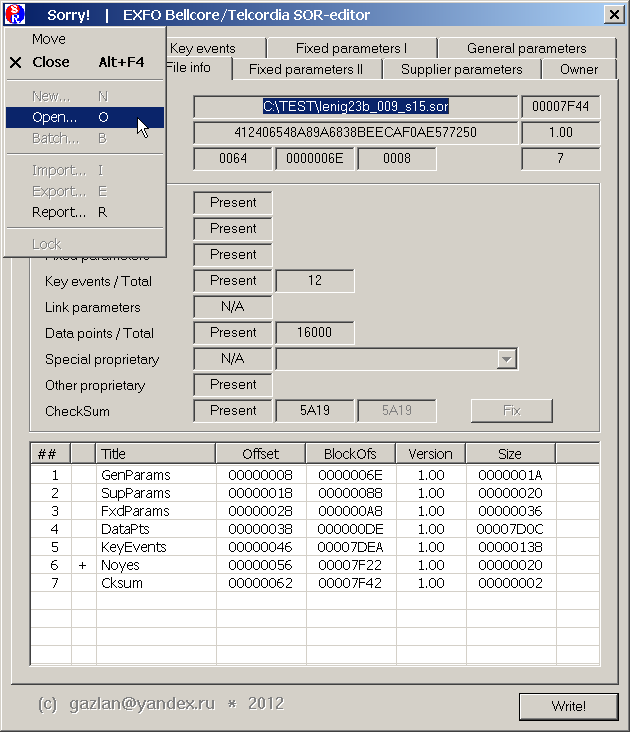
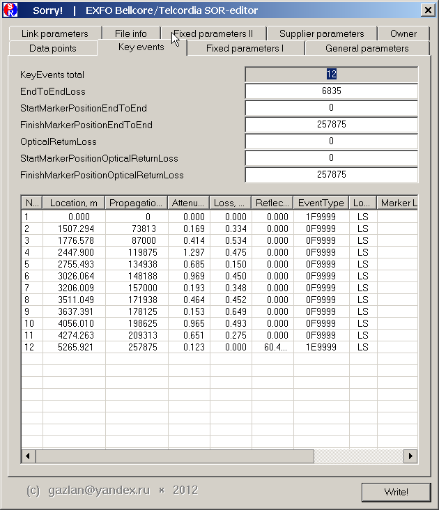

1. Открытие файла
Файл можно открыть тремя путями:
- передав имя SOR-файла как параметр командной строки
> sorry.exe FileName.sor
- из системного меню, выбрав команду Open

- перетащив мышкой SOR-файл на окошко программы
(удобно, если нужно подряд просмотреть несколько файлов)
Note:
Можно указать sorry.exe программой по умолчанию для файлов типа SOR,
тогда они будут открываться по двойному клику мышкой на файле.
Note:
Можно одновременно запустить несколько копий программы и открыв в них
тот же самый файл, одновременно проматривать информацию на разных
вкладках, например, KeyEvents Collection & DataPoints Collection.
2. Сохранение файла
Сохранение возможно в любой момент, независимо от открытой вкладки.
Сохраняется вся, относящаяся к файлу информация, независимо от открытой
вкладки. Иными словами, сохранение всегда делает "снимок" текущего
состояния редактирования для всех вкладок редактора. Если вы
переключаетесь с одной вкладки на другую, все изменения сохраняются в
памяти и будут учтены при сохранении.
Можно просматривать и редактировать вкладки в любом порядке. Ничего не
будет записано, пока не нажата кнопка Write и все будет сохранено при ее
нажатии.
Если файл не был сохранен, то все сделанные изменения будут потеряны.
Предпочтительно сохранять отредактированный файл с новым именем и описать
сделанные изменения в комментарии на вкладке Owner.
3. Редактирование
Редактирование одиночных полей осуществляется обычным образом. В тех
случаях, где возможен только ограниченный набор вариантов, использован
Combobox control,
в остальных случаях - Edit control.
Коллекции представлены как списки значений (List control) и для
редактирования элемента коллекции его необходимо выбрать (кликнуть по нему
мышкой).
Двойной клик, обычно, сразу открывает выбранный элемент коллекции для
редактирования, правый клик вызывает меню с расширенным выбором вариантов.
Коллекции могут быть вложенными (как матрешки).
В этом случае, двойной клик по элементу внешней коллекции вызывает диалог,
на котором представлена внутренняя коллекция.
Все действия с коллекциями однотипны и, обычно, включают
удаление/добавление элемента коллекции, его модификацию и удаление всех
элементов коллекции.
4. Специальные случаи
4.1 FileInfo
По умолчанию, редактор всегда открывает вкладку FileInfo, на которой
представлена (нередактируемая) информация о файле.
Исключение составляют необязательные блоки, которые можно удалять
и кнопка фиксации контрольной суммы (активна для поврежденных файлов).
Важно понимать, что фиксация контрольной суммы не исправляет поврежденный
файл, а только делает его более пригодным для чтения особо "капризными"
программами.
4.2 General
Вкладка General содержит практически текстовую информацию, безразличную
для работы редактора Sorry!. Иными словами, с точки зрения редактора,
здесь может быть все, что угодно.
4.3 Fixed I
Вкладка Fixed I содержит существенные для анализа трассы данные, их
изменение, скорее всего, приведет к необратимой порче файла. Sorry!
использует данные с этой вкладки для собственных вычислений.
4.4 Fixed II
В версии SOR 1.xx доступна только коллекция импульсов, редактировать
которую настоятельно не рекомендуется. Данные этой коллекции критически
важны как для анализа трассы, так и для работы редактора.
4.5 Suppplier
Вкладка Suppplier содержит только текстовую информацию, безразличную для
работы редактора Sorry!. Иными словами, с точки зрения редактора, здесь
может быть все, что угодно.
4.6 KeyEvents
Таблица ивентов является необязательной и может быть создана и удалена или
модифицирована как пользователем, так и программой автоанализа.

Метафорически, ивент является дуальной сущностью. Физически, ивент
существует, как превышающее заданный порог, отклонение значения точки
трассы от виртуальной линии затухания. Логически, ивент существует как то,
что думает о нем пользователь или программа автоанализа, и что записано в
таблицу ивентов. Модификация таблицы ивентов (логическое редактирование)
не изменяет физического статуса ивента. Единственная, существующая между
ними связь - это отметка дистанции, к которой привязан данный ивент. Иными
словами, логический ивент - это проекция набора параметров трассы в данной
точке дистанции в их описание в таблице ивентов.
Удаление, добавление и редактирование логического описания элемента не
меняет физического состояния связанного с ним участка трассы.
Удаление, добавление и редактирование физического ивента не влияет
непосредственно на состояние таблицы описателей, но она будет перезаписана
при последующем (ручном или автоматическом) реанализе.
С точки зрения редактора, существенно различие между рефлективными
(ступенька вверх) и нерефлективными (ступенька вниз) ивентами.
Рефлективный ивент, скорее всего, может быть удален сплайсингом
(сращиванием) по точкам ближайшей окрестности и/или ручным
редактированием.
Редактор Sorry! предлагает для этого ручное редактирование точек трассы и
автосплайсинг по 2/4/8/16/32 точкам окрестности.
Чем более "гладко" выглядит трасса в окрестности ивента, тем большее число
точек сплайсинга может быть выбрано, для получения более точного среднего
коэффициента наклона трассы.
Для "негладкой" трассы единственным возможным вариантом может оказаться
ручное редактирование.
Для нерефлективных ивентов все сложнее.
Очевидно, сплайсинг для таких ивентов НЕ работает.
 Мне видятся два варианта решения (и/или их комбинация).
Мне видятся два варианта решения (и/или их комбинация).
A. Shifting - физический подъем линии трассы на величину ивента
Преимущества:
ивент может быть полностью устранен
Недостатки:
влечет полный пересчет всех оставшихся точек трассы, затухание на дальнем
конце изменяется на величину сдвига.
B. Rotation - физический поворот виртуальной линии трассы на подходящий
угол, с тем, чтобы погасить значение ивента в данной точке.
Преимущества:
ивент может быть полностью устранен
Недостатки:
влечет полный пересчет всех оставшихся точек трассы, вследствие
проективного удлинения трассы, могут возникнуть множественные новые
ивенты, для повернутого участка трассы изменится удельное (на километр)
значения затухания, и может принять необычно большое значение.
Резюме:
Не существует простого и "дешевого" решения этой проблемы. Даже
автоматический сдвиг/поворот может потребовать многократного пересчета
всей трассы, по мере распространения и саморазмножения ивентов на
дистальном конце при их уничтожении на проксимальном конце.
5. Бонус
Поскольку SOR-формат допускает хранение нестандартных блоков
проприетарного формата с информацией от вендора, Sorry! использует эту
возможность для добавления собственного блока, в котором сохраняет
некоторую информацию, в первую очередь, созданный пользователем
комментарий (произвольный текст). Этот комментарий доступен на вкладке
Owner и позволяет сохранять вместе с SOR-файлом его описание.
|